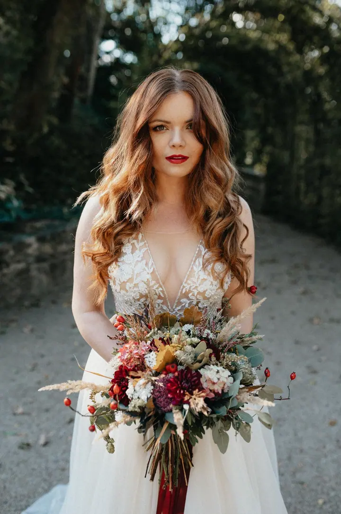

Svatební fotografie
Kreativita, reportáž i portréty. Fotím komorní elopement v centru Prahy i velkou oslavu s rodinou a přáteli, místo strojených póz se soustředím na vaši skutečnou blízkost.

Jmenuji se Hedvika Fialová a jsem svatební a lifestyle fotografka z Prahy. Fotím svatby, těhotenství, miminka i rodiny, přirozeně a bez strojených póz. Zaznamenám vaše o…
Rezervovat termínJsem svatební fotografka z Prahy a nejraději vyprávím příběhy přes přirozené a nadčasové fotografie. Fotím v kouzelných uličkách historické Prahy, na romantických zámcích i v krajině po celé republice, a když je potřeba, tak i na pláži ve Vietnamu. Ať už jde o žádost o ruku, párové focení, předsvatební chvilku nebo samotný svatební den, vaše láska je můj největší motiv.


Před foťákem nemusíte stát jako model ani mít dokonalý úsměv. Stačí být sami sebou, já se postarám o světlo, kompozici i moment. Věřím, že každá rodina a každý pár si zaslouží příběh vyprávěný vlastními detaily: emocemi, prostředím a gesty, která se nehlásí, ale jsou tím nejcennějším.
V Praze 9 v Čakovicích mám vlastní ateliér, zařízený pro focení miminek, dětí a rodin. Miminka fotím bez rekvizit a bez tlaku na uspání, v klidném tempu, které jim vyhovuje. Mým cílem je, abyste se ke svým fotkám vraceli i po letech a znovu cítili smích, slzy i kouzlo toho dne.
Co fotím
Kreativita, reportáž i portréty. Fotím komorní elopement v centru Prahy i velkou oslavu s rodinou a přáteli, místo strojených póz se soustředím na vaši skutečnou blízkost.
Newborn focení přirozeně a bez póz, bez rekvizit a náročného polohování. Fotím v ateliéru v Čakovicích nebo u vás doma, s dostatkem času na kojení i uklidnění.
Jemné doteky, klid a očekávání v přírodě, u vás doma nebo v minimalistickém ateliéru. Partner i starší děti jsou vítáni.
Rodinné focení venku nebo v ateliéru, kde stačí být sami sebou. O světlo, kompozici i moment se postarám já.
Fotografie jsou ilustrační
Postup
Pokud máte rádi kávu, skvěle, já ji miluji. U jedné probereme vaše představy, obavy i to, co by mi nemělo uniknout, a ráda vám poradím s harmonogramem.
Venku nebo ve studiu, třeba tam, kde vaše love story začala. Pomůže vám cítit se v den svatby před foťákem uvolněně a jako mým snoubencům vám ho nabízím za zvýhodněnou cenu.
Vy se bavte, o fotky se postarám já. Když je potřeba zorganizovat hosty, udělám to, a když je lepší nebýt vidět, umím tiše našlapovat.
Zhruba do 4 dnů od svatby vám pošlu první vlaštovky, přibližně 40 fotek z celého dne. Pokud budete chtít, společně doladíme i svatební fotoknihu.
Otázky
Cena se odvíjí od hodinového rozsahu. Nabízím několik balíčků a aktuální ceník s popisem kolekcí vám ráda pošlu na požádání. Pro kratší focení připravím individuální nabídku.
Sídlím v Praze, ale svatby fotím po celé České republice. Těhotenské a rodinné focení probíhá v Praze a okolí, venku, u vás doma nebo v mém ateliéru v Čakovicích.
V klidném tempu, bez rekvizit a stylizovaných aranží, s časem na kojení, přebalování i uklidnění. Focení trvá maximálně 1,5 hodiny a balíčky stojí 4 500 až 8 900 Kč, o víkendu je příplatek 1 000 Kč.
Ideálně mezi 28. a 34. týdnem těhotenství, kdy je bříško krásně vidět a focení je ještě pohodlné. Trvá obvykle 60–90 minut a můžete si vzít 1–2 převlečení.
Ano, pro tuto kombinaci nabízím zvýhodněné balíčky.